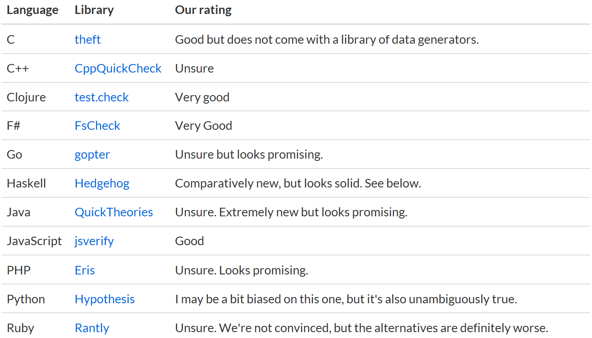
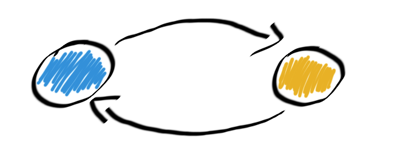
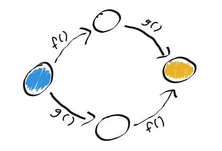
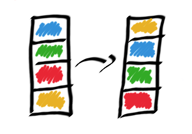

type ContactType =
| Twitter
| Blog
| GitHub
Full name: index.ContactType
| Blog
| GitHub
Full name: index.ContactType
union case ContactType.Twitter: ContactType
union case ContactType.Blog: ContactType
union case ContactType.GitHub: ContactType
val getContactInfo : _arg1:ContactType -> string
Full name: index.getContactInfo
Full name: index.getContactInfo
Intro to Property Based Testing
Thank You!!!
About me
- Shane Charles
- White Light Computing, Inc.
- Functional programming enthusiast
- Board member for Winnipeg .Net UG
1: 2: 3: 4: 5: 6: |
|
What is property based testing?
The thing that QuickCheck does.
~ almost everybody
Not Quite
1: 2: 3: 4: |
|
Merriam-Webster Definition of Property
- a quality or trait belonging and especially peculiar to an individual or thing
- an attribute common to all members of a class
Property Based Testing
A trait belonging to a process with results common to all members of a set of inputs.
Example
Any positive number multiplied by negative one will have a result less than zero.
- Process:
(*) -1 - Input Set:
Choose [1 .. ] - Result:
< 0
We Already Have TDD
- unit tests
- integration tests
Test, Fail, Fix
Test, Fail, Fix

The Power of TDD
- Build code one failure at a time
- Growth with stability
- Regression checks
TDD has Limits
-
Testing through specific examples
- How many is enough?
- Active becomes passive testing
- Legacy code with no tests
Property Advantages
- Generative testing
- Always active testing
- Generate actions or commands
- Race conditions
Where to start
-
Get a chunk of code or a library you commonly use
- Don't start with nothing (this isn't TDD)
Find your Testing Library

http://hypothesis.works/articles/quickcheck-in-every-language/
Make Some Assumptions
What do you think is true about the code or process?
Generate inputs
Question Everything
- Is it an actual failure or a problem with property?
Properties can require a lot of thought and can be difficult to come up with.
Patterns for Properties
- Starting point for creating properties
There and Back
- Serialization and deserialization
- Set value and get value

Different Paths Same Destination
- x + y = y + x
- x + x = x * 2

Some Things Never Change
- Size of collection
- elements of a collection after a sort

Hard to Prove Easy to Verify
-
String tokenizer
- Verify by concatenating the tokens
- Sorting
Test Oracle
-
Compare your results to a different 'proven' solution
- Performance optimizations
Should not crash
-
Generate http requests
- Get, Post, etc.
- Accepted HttpStatuses

Model Based Testing
Represent a complex system with a simplified model.
Command and Compare
- Generate sequence of commands
- Commands executed on model and the system
- Compare the intermediate results
Divergence Problems
- System under test
- Model
- Both above
- Specification
Benefits
- Understanding of system
- Identify specification deficiencies
- Parallel execution for race conditions
- Shrinking provides regression tests
Summary
-
Coming up with Properties can be difficult
- Forces us to better understand the domain
- Not meant for building
- The more complex the problem the better
-
Model based testing
- Simplified representation of all or parts
Use Both
Unit Test
Property Based Test
Extra Resources
- F# for Fun and Profit
- Testing the Hard Stuff and Staying Sane by John Hughes
- PropEr Testing
- Hypothesis